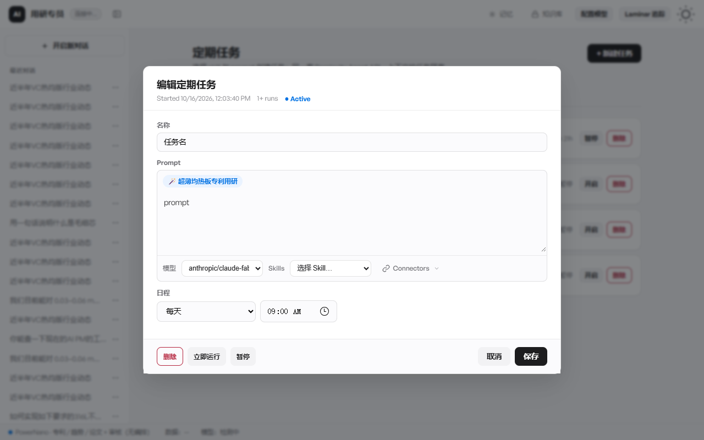
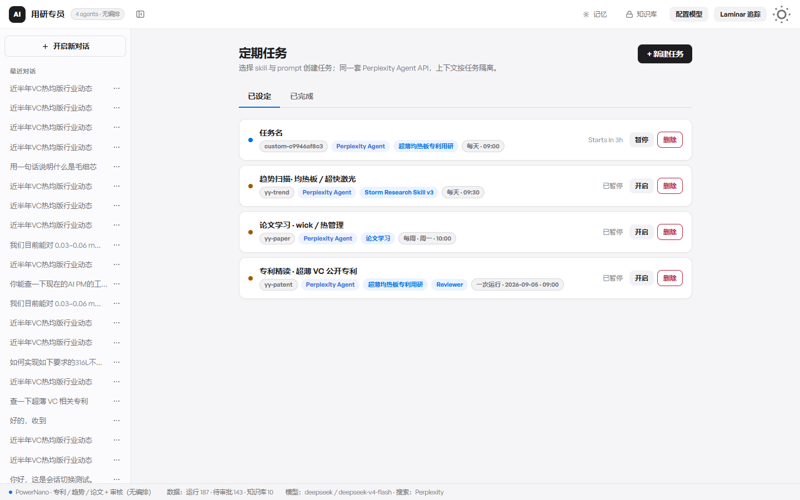
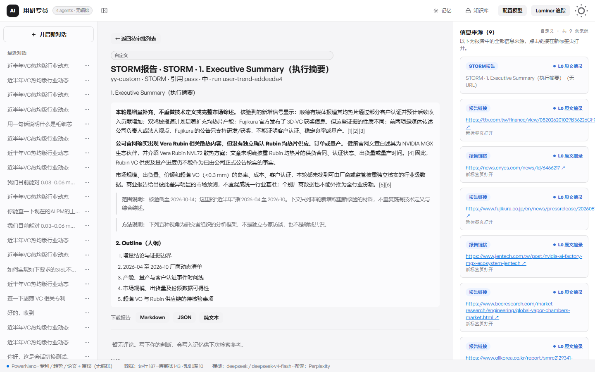
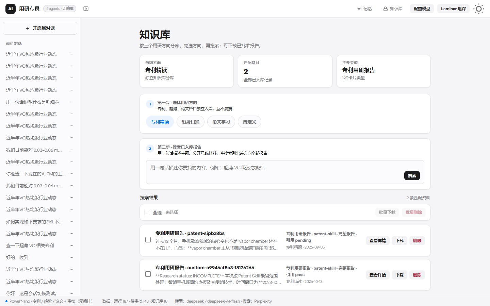

01 · 从 0 到 1
公开的论文、专利和行业动态，先和已有技术结论对过，再留在库里。人读它是为了学习，后面的问题也能接着用。
诀窍常常只在某个人脑子里。专家的时间耗在一遍遍回答基础问题上，做过的失败也很难被下一次用到。通用的对话工具能聊公开资料，看不见内部已经有的结论。工艺和配方也不适合送出去。
所以这一截只做一件事：把外面的论文、专利和行业动态接进来，接进来之前先和已有结论对一下。内网里陪着研发干活的助手，不在这件作品里。眼下还有人每周写一份，贴到微信里传阅，看完就散了。
打开一个课题，左边是一张图。最上面是主线，也就是这次真正要搞清的那件事。读的时候若冒出一个值得单独查的问题，可以先标成待办，也可以马上开成子任务。界面里，子任务叫做深度探索。
开工的那一下会留下一张快照，记着主线当时已经知道什么。之后这条子任务自己去查，不把主线后来写下的结论拿来当自己的报告。旁边的子任务也不共用草稿。子任务下面还可以再长出下一级。图上能看见哪些还在查，哪些已经有了结论。
问题进来，先看知识库和论文库里有没有能用的材料。重复问过、库里盖得住的，直接答。盖不住、过时了，或者问的角度对不上，才出去补，并按问题带上趋势或专利的做法。跟专业无关的闲聊，不走这套检索。
从外面拿回来的内容，先和已有结论对一遍，标成机会、风险，或者已经覆盖。人读的时候分成三层：这周发生了什么，为什么值得看，对现有技术路线有什么影响。
持续要盯的方向，由人自己写下来：盯什么，用哪套做法，多久做一次。也可以随时再加一条。到点就跑，跑完直接进库，不等人点头。人仍然要读到它。读，是为了学习。进库，是为了下一句提问、下一次调研还能用到它。
论文要不要单独做成定期精读，还没定。它可能是一份给人学的简报，也可能是等有人问了，再从本地论文库或网上去找。
库里放的是报告本身。下次有人提问，会拿这些报告来用。
另一样是口味。人评论过、放过，或者明确不采纳过的偏好，下次同一方向只会读到一个很短的摘要。这个摘要不能拿来冒充一条真实来源。子任务记住的，只有开工时那张快照。
真实的用研问题已经在往里送。每一步检索和成文都留着痕，免得最后只看见一篇看起来完整的报告。另外会请一个更强的模型看这答案对业务有没有用。格式像不像一份报告，不算通过。
还没有可以写上的结果数字。这一页就停在正在验收。
报告正文和正在跑的产品在密码后面。工艺参数不放在这页上。



